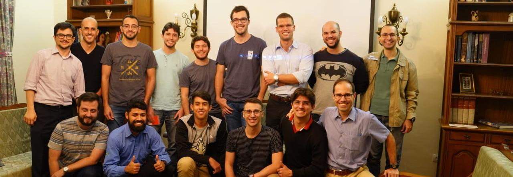

Residência
Realizamos uma reforma recentemente para expandir o número de quartos. Com o objetivo de estarmos Saiba Mais bem preparados para receber jovens universitários comprometidos com sua formação e crescimento pessoal.
O Centro Cultural Esplanada é mantido pela ACERE, entidade sem fins lucrativos. A ACERE existe para despertar a sensibilidade das pessoas para as questões sociais, sobretudo sua própria responsabilidade na transformação positiva das instituições.Você pode ajudar fazendo uma doação.

Há diversas pessoas em contato com as atividades desenvolvidas pelo CCE, que colaboram financeiramente com as nossas iniciativas. O objetivo da ACERE é o de viabilizar recursos econômicos de longo prazo, para o desenvolvimento das atividades de formação que realizamos.

Ajude a ACERE na manutenção do Centro Cultural Esplanada. Necessitamos de novos colaboradores, além da fidelidade daqueles que já contribuem, seja financeiramente ou com o seu trabalho.
Realizamos uma reforma recentemente para expandir o número de quartos. Com o objetivo de estarmos Saiba Mais bem preparados para receber jovens universitários comprometidos com sua formação e crescimento pessoal.
Ajude-nos na arredação de fundos para a construção de um estacionamento para o Centro Cultural. Um estacionamento trará Saiba Mais segurança para os carros dos visitantes. Também diminui o esforço para encontrar vagas em determinados períodos do dia em que o tráfego local é Saiba Mais intenso.
O Clube 14bis foi criado por pais e educadores, com um projeto pedagógico preciso, visando a promoção de atividades educativas.